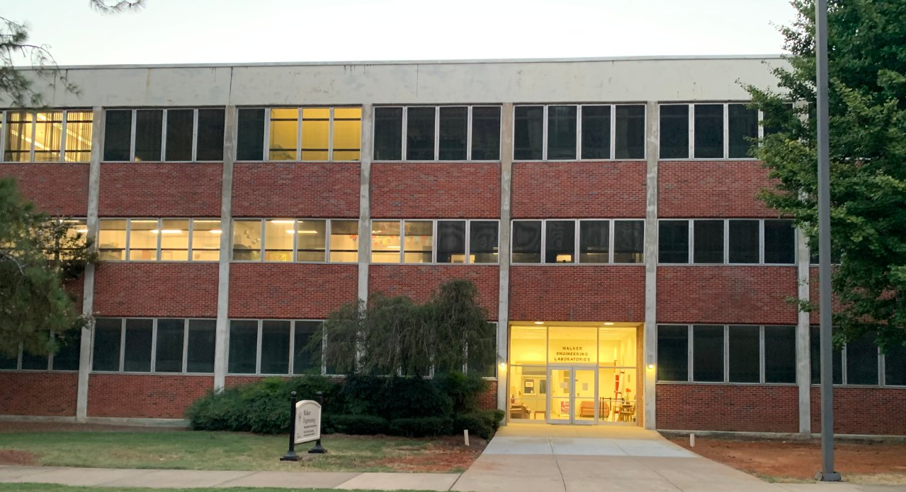

The MSU AI Club's Campus Vision Challenge asked teams to identify which campus building appears in a photo, across ten buildings: Butler, Carpenter, Lee, McCain, McCool, Simrall, Swalm and Walker Halls, Old Main, and the Student Union. Judges ran each team's model on their own held-out photos, so the model had to cope with whatever lighting, angle and phone camera the judges used.

| Metric (validation, after 11 epochs) | Value |
|---|---|
| Accuracy | 0.9945 |
| Precision | 0.9945 |
| Recall | 0.9945 |
| F1 score | 0.9945 |
| Log loss | 0.0300 |
The team took first place. Colab compute limits capped training at 11 epochs and left some architecture and augmentation options unexplored.